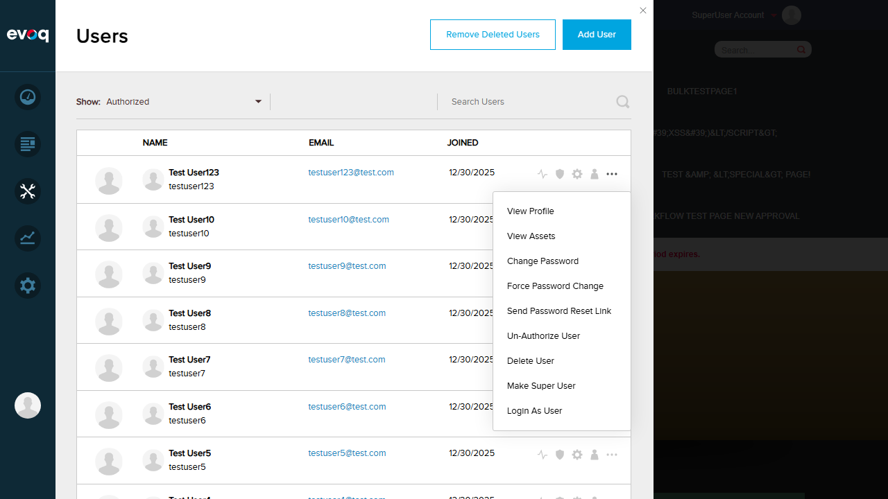
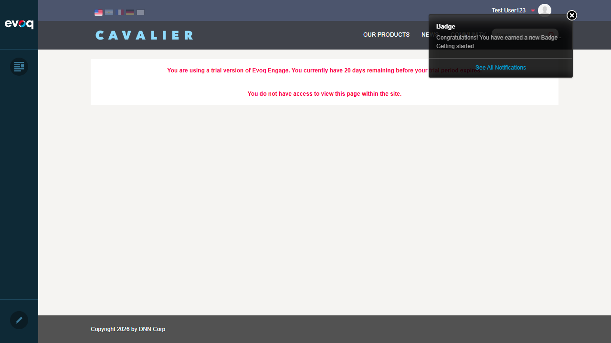

| Feature Name | Login As User (Impersonation) |
|---|---|
| Description | Impersonate another user with security restrictions and audit logging |
| Extension | Evoq.PersonaBar.Users |
| Priority | Top |
| UI Location | Admin > Users > Select User > More Menu > Login As User |
| Test Date | January 6, 2026 |
PASS
Verify that a SuperUser can successfully impersonate a regular authorized user.
Before - Menu showing "Login As User" option:
After - Successfully impersonated as Test User123:
PASS - Successfully impersonated Test User123. The page reloaded and the user context changed to show "Test User123" in the header. The PersonaBar showed reduced permissions appropriate for a regular user.
PASS
Verify that the page automatically reloads after successful impersonation to reflect the new user context.
PASS - The page automatically reloaded after impersonation. The code confirms this with window.top.location.reload() being called after successful impersonation API response.
PASS
Verify that a user cannot impersonate themselves. The "Login As User" option should not appear for the current user.
PASS - The "Login As User" option is NOT shown for the current user (self). The menu only shows: View Profile, View Assets, Change Password, Force Password Change, Send Password Reset Link. This is enforced by the frontend code: user.userId !== settings.userId.
PASS
Verify that the "Login As User" option does not appear for SuperUser accounts when viewed by non-SuperUser administrators.
!user.isSuperUser prevents "Login As User" from appearing for SuperUsersFrontend (permissionHelpers.js):
export function canLoginAsUser(settings, user) {
return (settings.isAdmin || settings.permissions.LOGIN_AS_USER)
&& user.userId !== settings.userId
&& user.authorized && !user.isDeleted && !user.isLocked
&& !user.isSuperUser; // <-- SuperUsers cannot be impersonated
}
Backend (EvoqUsersController.cs):
if ((user.IsSuperUser && !UserInfo.IsSuperUser) || !IsAdmin())
{
response = Request.CreateErrorResponse(HttpStatusCode.Unauthorized,
Localization.GetString("InSufficientPermissions", ...));
return null;
}
PASS - Code review confirms that non-SuperUsers cannot impersonate SuperUser accounts. The frontend prevents the option from appearing, and the backend returns 401 Unauthorized if attempted via API.
PASS
Verify that an audit log entry is created when a user is impersonated.
PASS - The Admin Logs show a "User Impersonated" entry dated 01/06/2026 22:20:29 with Username: host and Summary: "Username testuser123". This confirms audit logging is working correctly. The code confirms: EventLogController.Instance.AddLog("Username", user.Username, PortalSettings, user.UserID, EventLogController.EventLogType.USER_IMPERSONATED);
PASS
Verify that the LOGIN_AS_USER permission is required to impersonate users.
[HttpPost]
[ValidateAntiForgeryToken]
[AdvancedPermission(MenuName = Components.Constants.MenuName,
Permission = Components.Constants.LoginAsUser)]
public HttpResponseMessage LoginAsUser([FromUri] int userId)
PASS - The LOGIN_AS_USER permission is required as confirmed by the [AdvancedPermission] attribute. Additionally, CSRF protection is enforced via [ValidateAntiForgeryToken].
!user.isDeleted.user.authorized && !user.isLocked.!user.isSuperUser), but the backend allows SuperUser-to-SuperUser impersonation. This means even if a SuperUser wanted to impersonate another SuperUser, the UI wouldn't show the option.[ValidateAntiForgeryToken][AdvancedPermission]EventLogType.USER_IMPERSONATEDDataCache.ClearUserCache()PortalSecurity.Instance.SignOut()